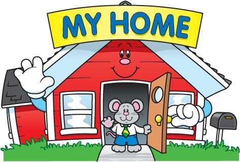

My Home
Homes offer security and feel affection for human life and it is one of the most important things. "An East or West home is the best" is the saying and it is true according to my home, because my home is the best place for me in the world. We are a middle class family and my home also belongs to the family background. The dining room is decorated well and it has a soft, a refrigerator, a TV set and a dining table. There are three bedrooms. One bedroom is using my grandparents and others shared with my mother, father, brother and me. The kitchen also organized well same as other places and all of us helping to keep the home clean and tidy. We are sharing household work and always considering for the needs and comforts of each other. That is the top secret of the happy life of my home. There is a small garden around the home and one side is facing a paddy field. It is very beautify place and I am very like to spend the evening in the home garden. Our home is very busy and rushes in the morning, but we are never forgetting to have our dinner together and it is useful to keep the joy of the family. My home offers affection, security and happiness for my life and I am very round of my home.